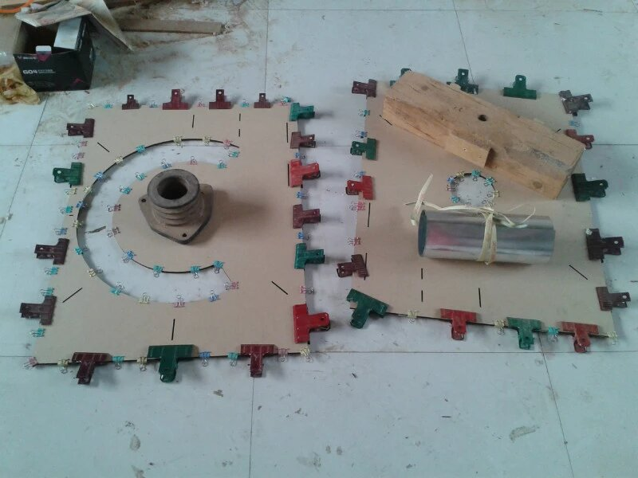
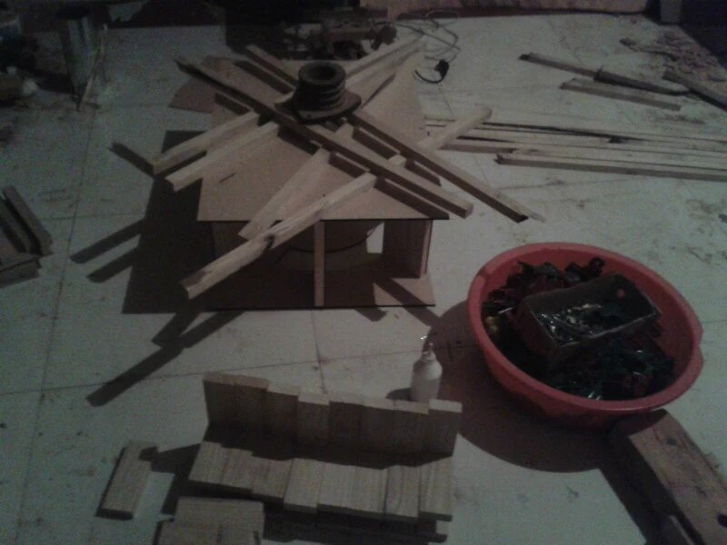
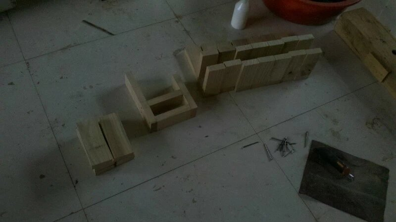
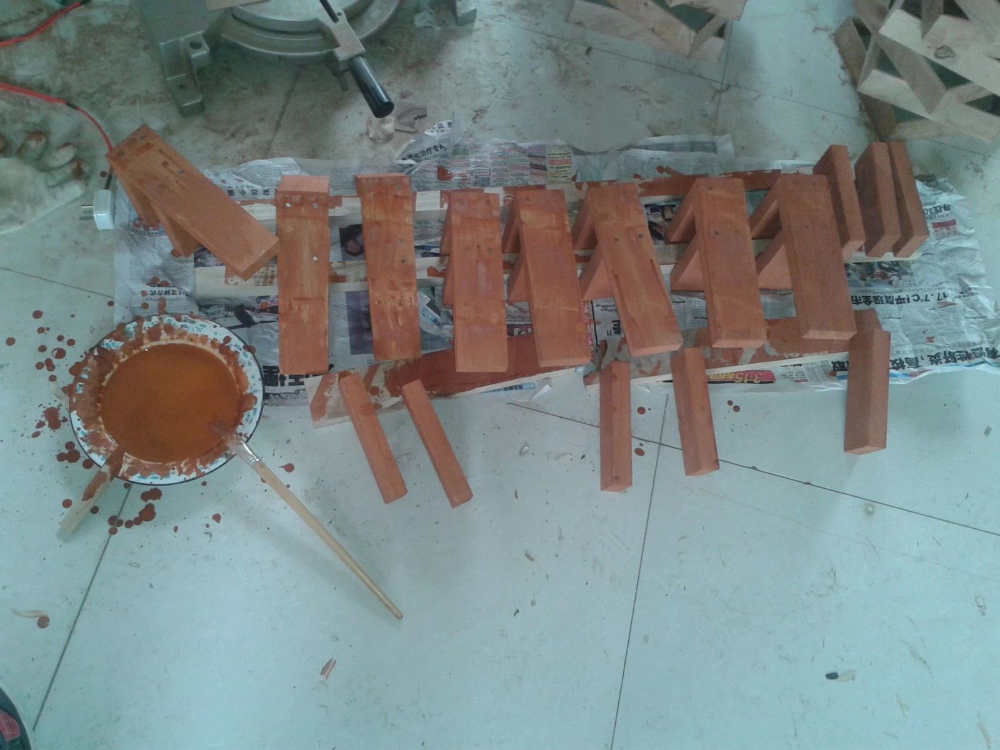
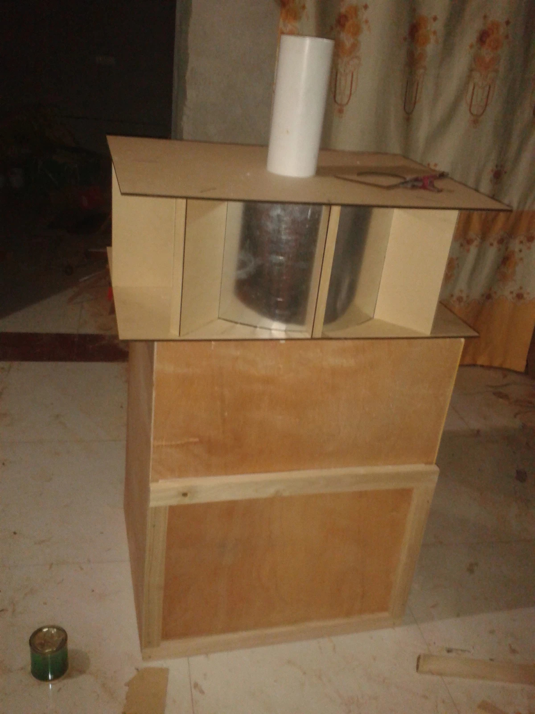
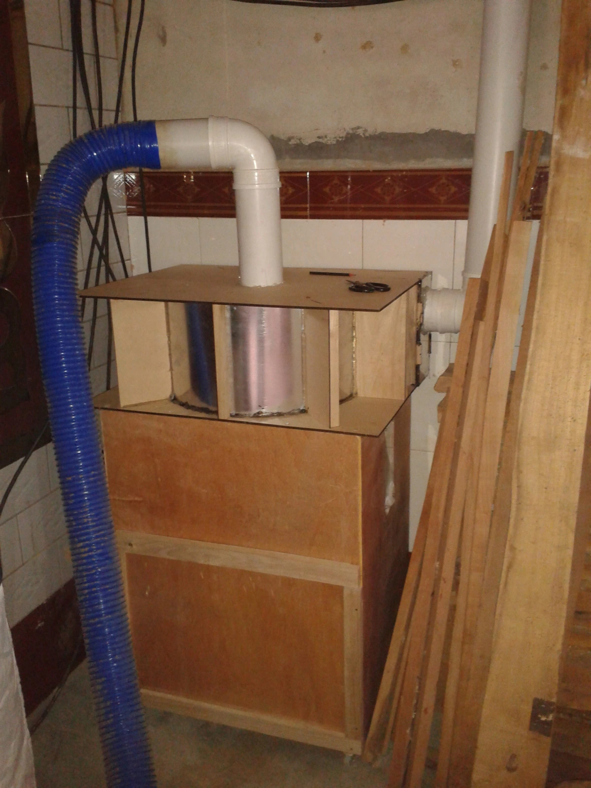
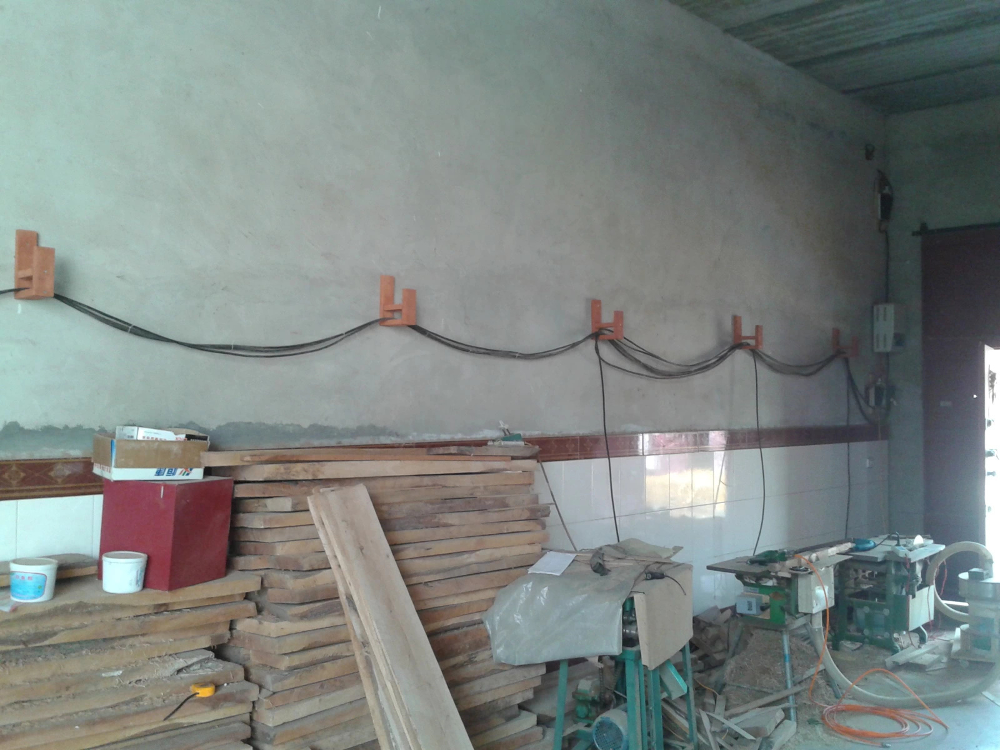
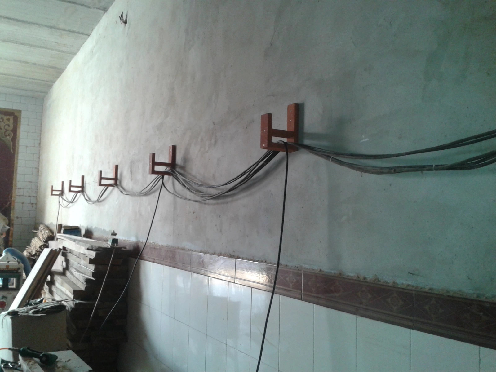
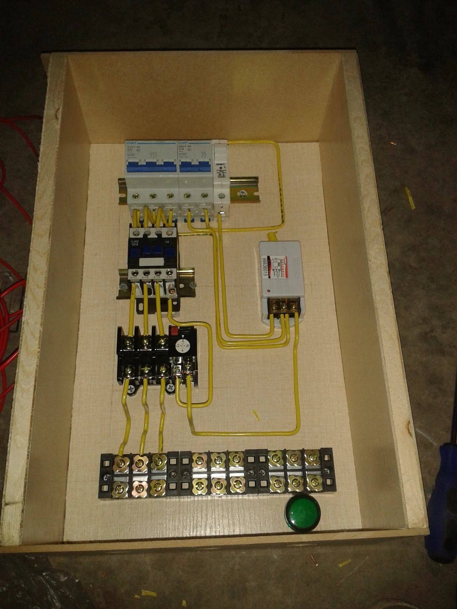
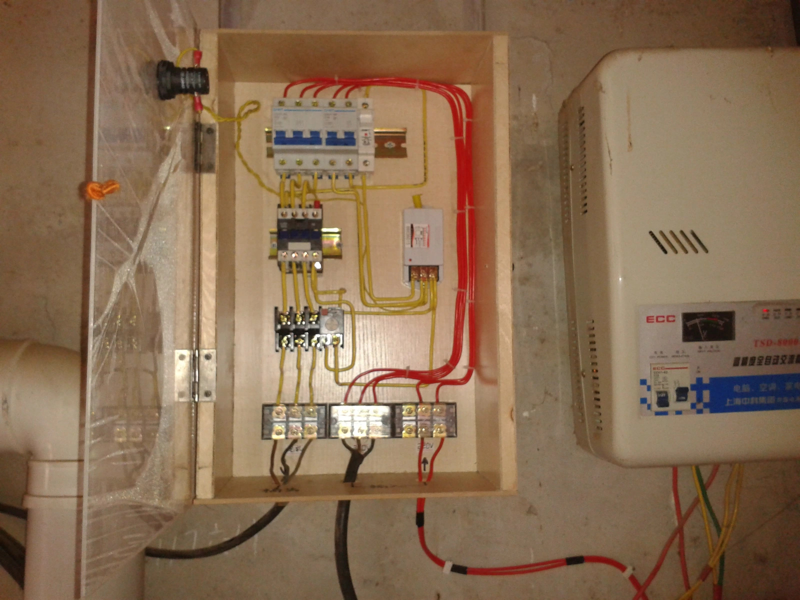

Building My Thien-Baffle Dust Collector
These photos were taken more than ten years ago, when I was trying to improve the dust collection in our small woodworking shop. Nothing fancy — just plywood, PVC pipe, and a lot of trial and error.
Why I built it
We already had a dust collector in the shop, but I wanted better chip separation before the dust reached the filter bags. The goal was simple: catch more chips, protect the collector, and make cleanup easier with materials I could build myself.
This build was done long before I started documenting projects more carefully, but it remains one of the most useful things I ever made.
Making the separator
Instead of building a full cyclone, I chose the Thien-baffle approach because it was simple, compact, and realistic to make with the tools I had at the time. The structure was made mainly from plywood, with a metal cylinder used as the main chamber.
It took a few adjustments to get the airflow right, especially around the inlet and the baffle gap, but after some testing the separation improved a lot.




Building the collection box
Under the separator, I built a simple plywood collection box to catch the heavier chips and dust. It was easy to empty, easy to repair, and worked well in daily use.


Installing it in the shop
The system was connected with PVC pipes and flexible hoses. It was not pretty, but it was practical and easy to maintain. For a working shop, that mattered much more than appearance.
I also made small wooden brackets to support the pipe runs and to help organize wiring along the wall.



Adding a remote switch
One detail I still like very much is the remote control switch I added for the dust collector. At the time, it felt like a small upgrade, but in daily use it made a big difference.
I built a simple control box around the contactor, protection devices, terminals, and a wireless receiver so the collector could be switched more conveniently from the workshop.
Even today, after more than ten years, that remote switch is still working.


Why this project still matters to me
Looking back now, this was not a perfect build, but it worked, and it lasted.
It came from a real need in the workshop and was built with simple materials, patient trial and error, and a lot of hands-on work.
In a workshop, that is often what matters most.